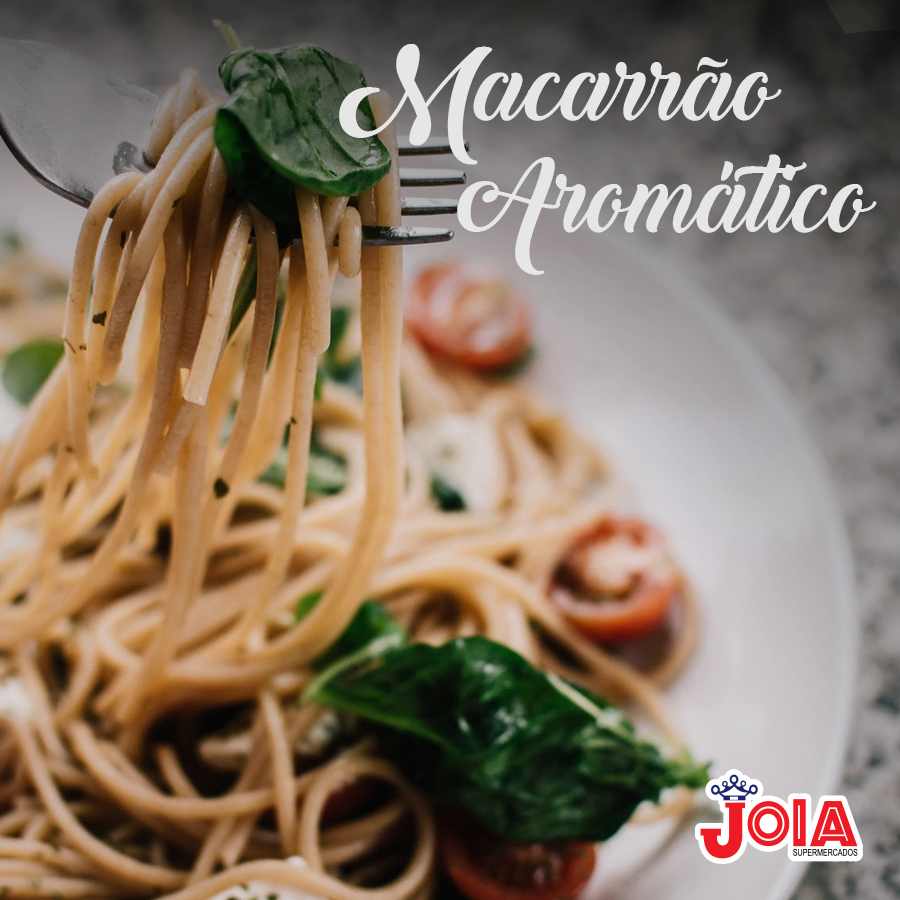

Macarrão Aromático
Ingredientes:

- 3 colheres (sopa) de azeite de oliva.
- 1 cebola pequena picada.
- 100 gr de Bacon picado em tiras.
- 1/2 xícara (chá) de salsa (ou salsinha) picada.
- 1/2 xícara (chá) de manjericão picado.
- 1 caldo de legumes.
- 400 gr de macarrão talharim.
- Sal a gosto.
- Pimenta-do-reino a gosto.
- Queijo ralado a gosto.
Modo de preparo
- Em uma frigideira, aqueça o azeite, doure a cebola e o bacon.
- Junte as ervas e o caldo de legumes.
- Tempere com sal e pimenta e deixe cozinhar por 4 minutos no fogo brando (160 ºC).
- Cozinhe o macarrão em água com sal abundante e fervente.
- Escorra, sirva com o molho e com o queijo ralado.